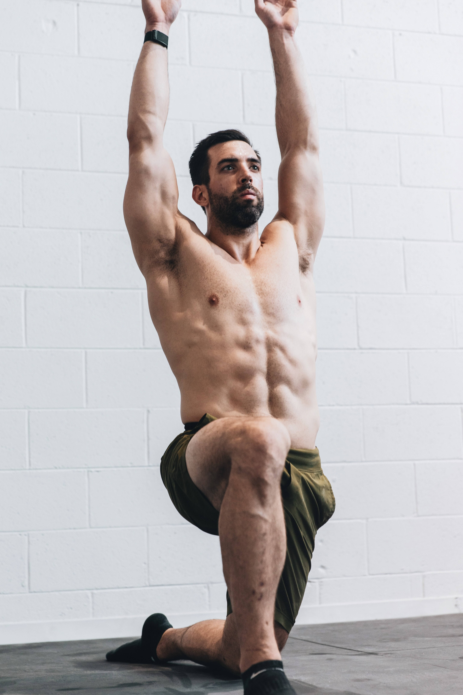

스트레칭의 중요성
스트레칭은 근육과 건(뼈와 근육을 연결하는 조직)에 탄력을 주고,
관절의 가동범위를 넓혀 유연성을 높여준다. 근육을 유연하게 유지시키고,
활성화 되지 않은 인체를 활성화 시켜 본 운동이 가능한 상태로 무리 없이 전환시키는 데 도움을 준다.
많은 사람들이 스트레칭을 준비운동이나 정리운동 정도로 간주하는 경향이 있지만,
유연성 향상이나 근육의 경직 해소를 위해서는 1주일에 3~4일 정도는 꾸준히 수행해야 한다.
된 근육을 풀어주기 위해 필요한 활동이다. 또 스트레칭은 운동과 일상생활에서 근골격계 손상을 예방하고,
운동 수행능력을 증가시키는 효과를 발휘한다.